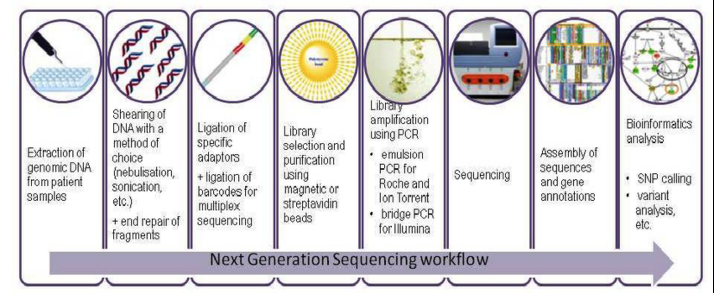
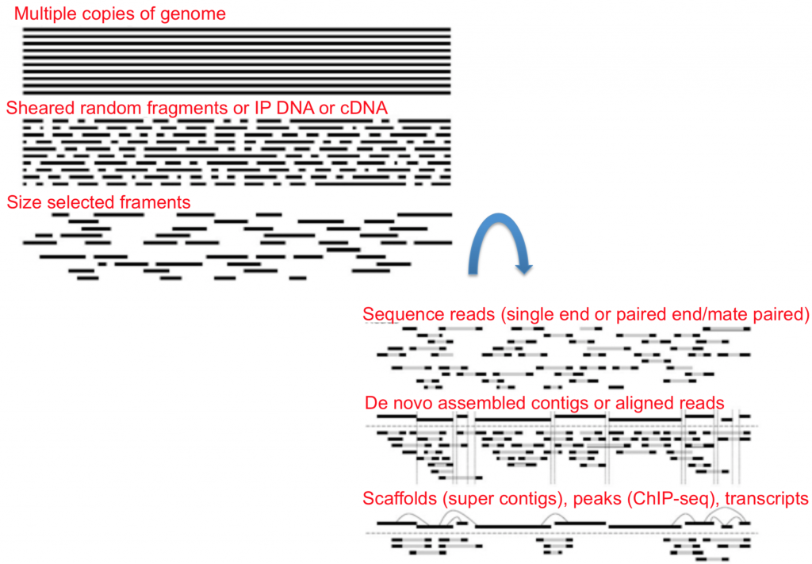
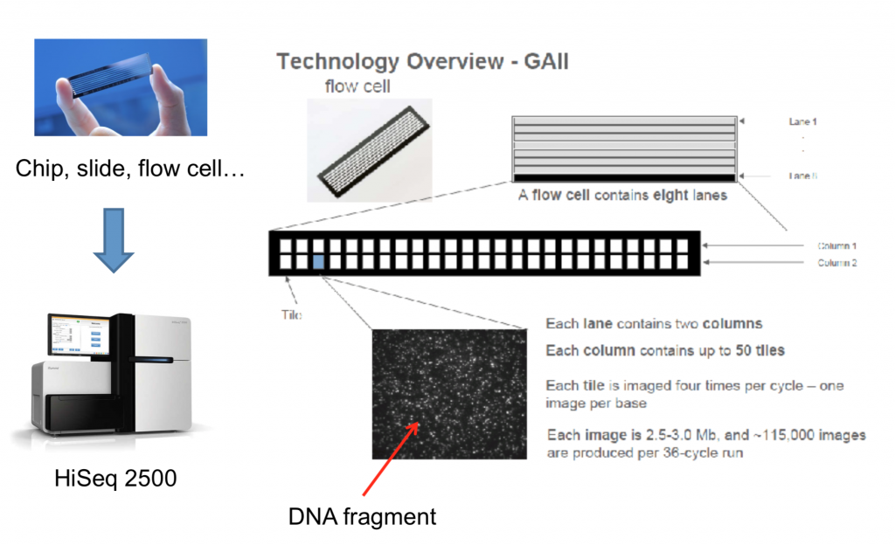

How sequencing works
Many different companies have their own sequencing technologies, some better suited for certain applications than others, but they boil down to the same concept: identify each nucleotide in a particular molecule.
The Genomics Core at NYU New York and in Abu Dhabi has a range of sequencers to choose from (see the GenCore sequencing page):
New York
Illumina NextSeq
Illumina MiSeq
Illumina NovaSeq 6000
Element Biosciences AVITI
Oxford Nanopore GridION
Abu Dhabi
Illumina NovaSeq 6000
Illumina NextSeq 550
Illumina MiSeq
Oxford Nanopore MinION
Oxford Nanopore PromethION P2i
PacBio Vega
There are three main steps in NGS:
Sample collection / preparation
Amplification
Basecalling
Sample collection and preparation
This step involves gathering the nucleic acids from your organism of interest. The collection method differs based on what the sample is, but the preparation usually involves isolating and purifying the nucleic acids, shearing them to a certain size, amplification of your product, and ligation of sequencing adaptors (small fragments of DNA used to anchor the molecule of interest onto the flowcell).
{kind=link}

The main steps in a next-generation sequencing workflow, from extraction of genomic DNA through to bioinformatics analysis. Source: ResearchGate.
Single-end vs paired-end sequencing
Once you have your nucleic acids ready to go you can then choose whether you want single-end or paired-end data.
Single-read sequencing
Single-read sequencing involves sequencing DNA from only one end, and is the simplest way to use Illumina sequencing. By leveraging proprietary reversible terminator chemistry and a novel polymerase, this approach delivers large volumes of high-quality data, rapidly and economically.
Highlights:
Simple library preparation: follows standard molecular biology methods; compatible with robotics.
Low input DNA requirements: as little as 100 ng genomic DNA or cDNA.
Economical: 1/100th the cost of traditional Sanger sequencing.
Simplified data analysis: high-quality sequence assemblies with short-insert libraries.
Paired-end sequencing
Highlights:
Simple paired-end libraries: a simple workflow allows generation of unique ranges of insert sizes.
Efficient sample use: requires the same amount of DNA as single-read gDNA or cDNA sequencing.
Broad range of applications: does not require methylation of DNA or restriction digestion; can be used for bisulfite sequencing.
Simplified data analysis: higher-quality sequence assemblies with short-insert libraries. A simple modification to the standard single-read library preparation process facilitates reading both the forward and reverse template strands of each cluster during one paired-end read. Both reads contain long-range positional information, allowing for highly precise alignment of reads.
To summarize, the illustration below shows each step of the library prep once nucleic acids are isolated and amplified.
{kind=link}

Each step of library preparation, from isolated and amplified nucleic acids through to a sequencing-ready library.
Sequencing
To better understand how sequencing is done on the machine, look over the diagram below. It shows the physical layout of the flowcell onto which the DNA is loaded.
{kind=link}

The physical layout of a flowcell onto which the library is loaded.
Amplification
On many platforms each library fragment is first clonally amplified, so that many identical copies sit together and produce a signal strong enough to detect. Illumina does this with bridge amplification to form dense clusters on the flowcell, and Element Biosciences’ AVITI uses rolling-circle amplification to build “polonies”. Single-molecule platforms such as Oxford Nanopore and PacBio skip this step entirely: they read one native molecule at a time, so no clonal amplification is required (though library preparation may still include an optional PCR step).
Basecalling
Basecalling is the step that turns the sequencer’s raw measurements into an actual sequence of bases. What is measured differs by platform: Illumina, AVITI and PacBio detect light (fluorescence), while Oxford Nanopore measures changes in ionic current as a strand passes through a nanopore. In every case, basecalling software translates that signal into a sequence of bases and assigns each base a quality score (see Quality scores).
Amplification (where it applies) and basecalling are essential steps across sequencing platforms. The following Illumina video shows both in action for sequencing by synthesis: Overview of Illumina Sequencing by Synthesis (the visuals help).